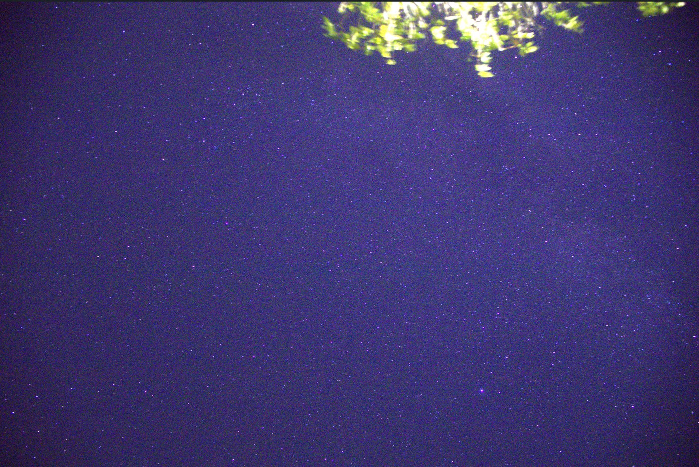
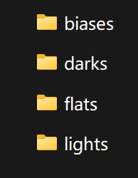
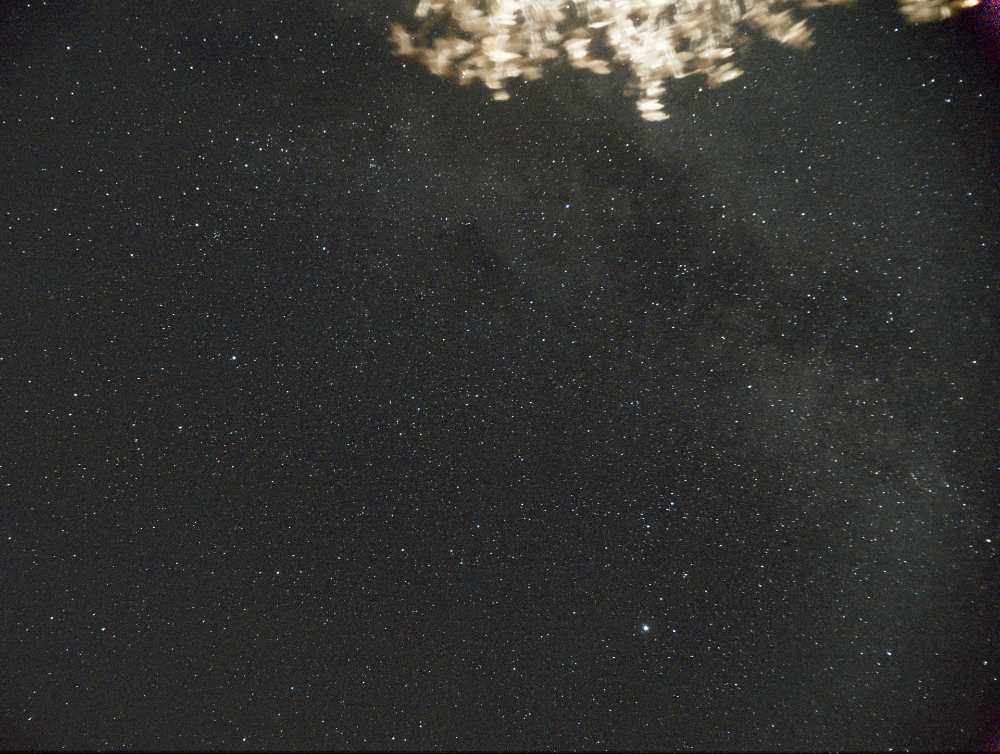

1. opencode辅助星空堆栈
项目成果
从多张噪声杂乱的raw原图出发，最终合成出银河清晰可见的成品图像。
我做了什么
将数据整理为4个文件夹：lights存放初始照片，另外3个分别存放单独拍摄的不同类型噪声校准帧；之后用opencode调用Siril完成校准、叠加与拉伸，再用StarNet去星、scipy降噪与锐化、星点硬化，最后Screen无损合成。
遇到的困难
raw原图中可以看出有很多杂乱的噪声信号，亮星暗星混杂，直接处理效果很差；单张成品tif文件高达121MB，超出GitHub单文件100MB的限制。
如何解决
通过分类拍摄的校准帧进行堆栈叠加，有效抑制了噪声；将成品tif压缩为高质量jpg后再纳入版本管理。


